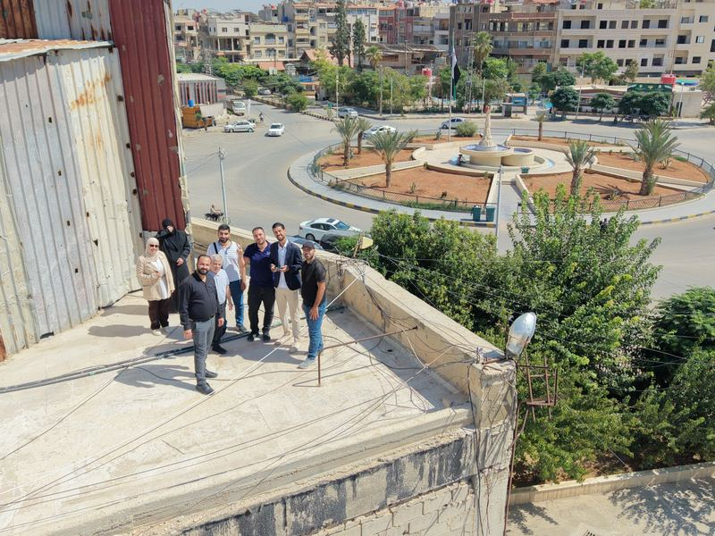
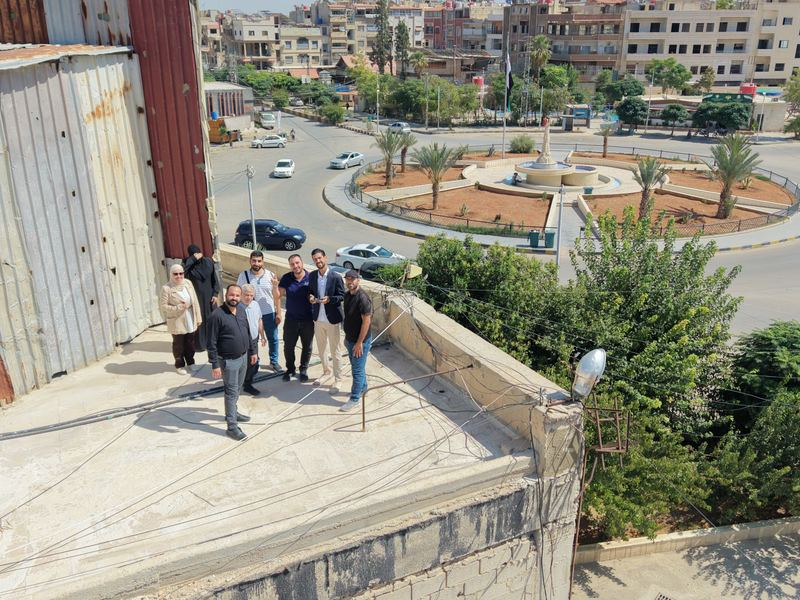
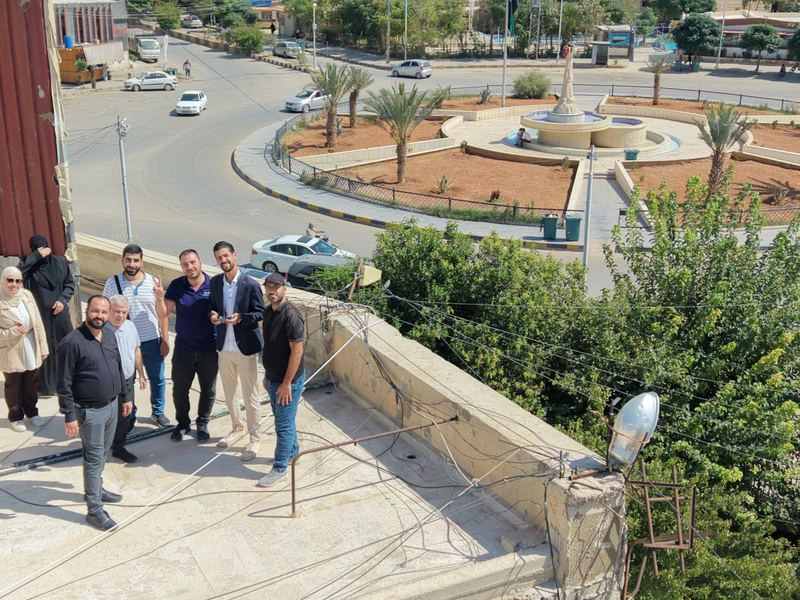

Workshop · In person
Workshop with the Douma Local Council GIS team
- Date
- Saturday 19 September 2026
- Time
- 10:00 am – 2:00 pm
- Place
- Douma Local Council, Rural Damascus
- With
- The council’s GIS team
About the workshop
An in-person workshop with the GIS team at the Douma Local Council, introducing the OSM Syria project and community and open geographic data, with hands-on training in humanitarian mapping and in using drones to map for development and aid.
Agenda
-
10:00 – 11:30Introducing the OSM Syria project and community, and open geographic dataAn introduction to humanitarian mapping with HOT
-
11:3030-minute break
-
After the breakContinuing mapping projects in Aleppo and Rural Damascus on the Tasking Manager
-
12:00 – 2:00How drones are used to map for development and humanitarian aidA test drone flight, coordinated with the city council
Photos from the workshop


